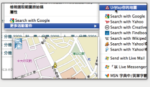
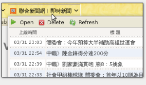
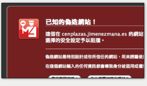

用 Firefox 體驗 IE8 功能

使用加速器更快地完成工作
IE8 的「加速器」讓你叫出快捷選單後可以執行相應的動作，操作方式想像成 Firefox 快捷選單的「以 Google 搜尋 {所選文字}」就相去不遠了。使用加速器可以方便您查詢地圖、相關物品等等功能。
Michael Kaply 的 Firefox Activities 擴充套件複製了 IE8 的「加速器」功能，您甚至可以在 IE8 附加元件網站安裝原先只給 IE8 使用的加速器！馬上裝裝看吧
立即試用這些加速器
- UrMap 你的地圖 - 安裝 UrMap 加速器，在網頁上圈選想查詢的地址，就可以快速取得該地址的地圖。
- 尋找其他有用的「加速器」
順利瀏覽過時網頁
IE8 終於正確解釋了絕大多數的 CSS 2.1 規範，也造成有些專為 IE6、IE7 撰寫的網頁反而變得無法正確顯示 (各位設計師，三不五時還是看一下標準吧 ^^; )。為此，IE8 加上了「相容性檢視」功能，讓你偽裝成 IE7/6 的顯示模式… 這不是很好的辦法，只是為網頁設計師爭取一些時間而已，但作為一個使用者、這的確不是您該操心的事。
面對其他的「IE Only」網頁，Firefox 可以安裝 IE Tab 擴充套件，再按下右下角的「IE」按鈕，即可使用 IE 核心順利瀏覽這些過時網頁。
IE Tab 僅能在Windows作業系統下使用。
Web Slices? (網頁快訊) Web Chunks!
「網頁快訊」將整片網頁「切」一段下來，方便你查詢新資訊。利用 WebChunks 您可以直接使用 IE8 的網頁快訊功能，更棒的是可以自行「切」出想看的內容，不需等網頁設計師支援喔！
本套件仍屬測試版，歡迎協助測試回報問題。
阻擋壞網站，保全您的網路體驗
2006 年的 Firefox 2 起，你家的火狐早已內建阻擋惡意網站功能，與 IE8 的「SmartScreen 篩選器」相似。Firefox 阻擋這些壞網站的能力藉助了 Google 及 PhishTank 提供的惡意網站資訊，保全您的網路體驗。
速度快
 微軟的測試表示 Internet Explorer 8 顯示網頁的速度跟其他瀏覽器都差不多快 —— 甚至開啟某些網站時比 Firefox 快 0.02 秒！事實上，如果將目前許多網站必備的「JavaScript」執行速度也列入考量，根據 CNET 的測試 (縱軸為時間，越短越快)、很顯然 IE8 還得多努力一下… 很多下。
微軟的測試表示 Internet Explorer 8 顯示網頁的速度跟其他瀏覽器都差不多快 —— 甚至開啟某些網站時比 Firefox 快 0.02 秒！事實上，如果將目前許多網站必備的「JavaScript」執行速度也列入考量，根據 CNET 的測試 (縱軸為時間，越短越快)、很顯然 IE8 還得多努力一下… 很多下。
JavaScript 帶給您更豐富的網路生活，也可以說是所謂「Web 2.0」網站的重要技術之一。提升 JavaScript 的執行速度才能帶給我們充滿創意的網路未來，因此下一版 Firefox (3.5 版) 開發中的版本 (圖中的 Mindfield) 全面更新 JavaScript 顯示技術，與先進網頁瀏覽器互有所長、良性競爭，相信您在 Plurk、Google 文件、Yahoo! 地圖等有趣的先進網站都能得到更美好的體驗。
Firefox 還有什麼先進功能？
Firefox 就如同您的個人瀏覽器，可以依據自己的需求調整其功能、倍增效率。不只如此，Firefox 3 更支援檔案下載續傳、佈景主題、隨打即找等功能，能帶給您全新感受，馬上試試看吧！
那麼 IE8 呢？
您已經了解，世界上不只有一個軟體可以用來看網頁，現在您可以依據需求、自由選擇適合自己的瀏覽器。微軟 IE8 除了上述功能外，還有以下幾項特點：
- IE8 終於跟上其他先進瀏覽器的腳步，較為完整地支援了 CSS 2.1。這麼一來網頁設計師可以設計更為美觀的網頁，不必擔心僅有 IE 看不到效果的問題。
- 「視覺化搜尋」是其他瀏覽器目前沒有的功能
- 下一代的 Firefox (3.5 版，預計 2009 六月推出) 才會有類似 IE8 InPrivate 隱私瀏覽的功能。(如果您使用 Firefox，目前可以先使用「清除隱私資訊」以達成類似效果。)
- 目前 IE 是唯一可以跑微軟自家 ActiveX 技術的瀏覽器，也就是說絕大多數的網路 ATM 轉帳只能在 IE 上使用。
如果您的工作或生活上非用 IE 不可，那麼或許可以考慮升級 IE8、救救網頁設計師。